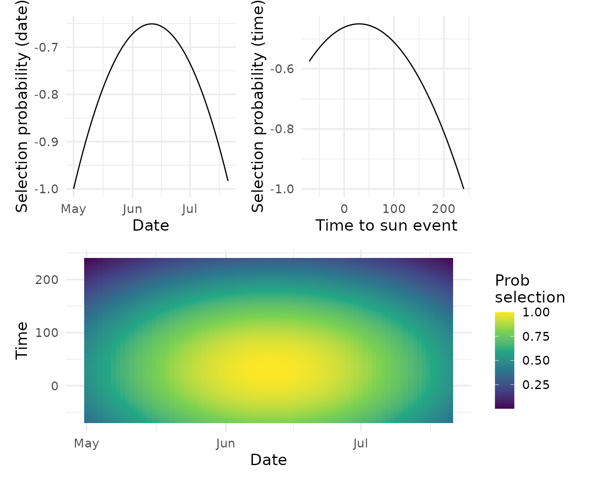
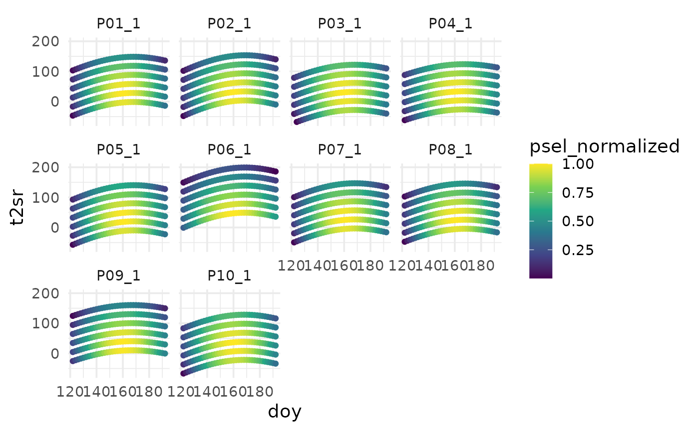
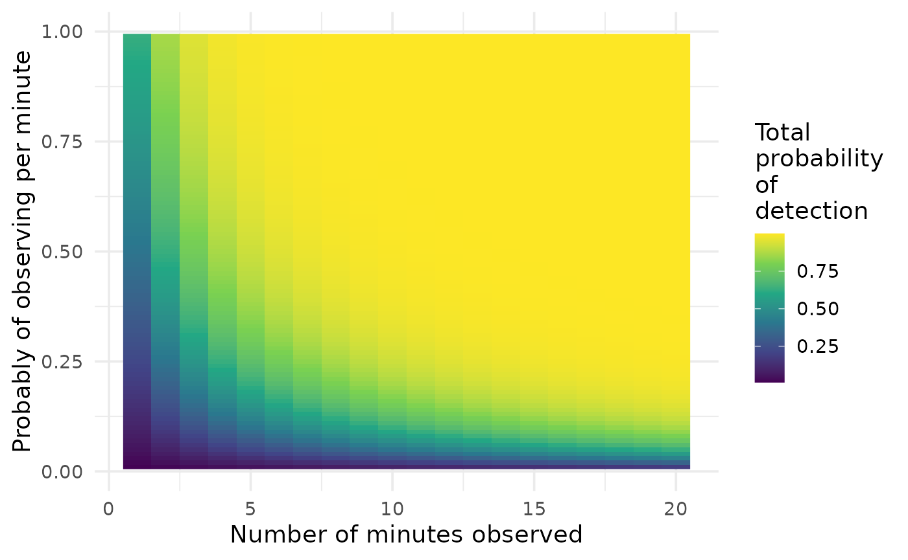
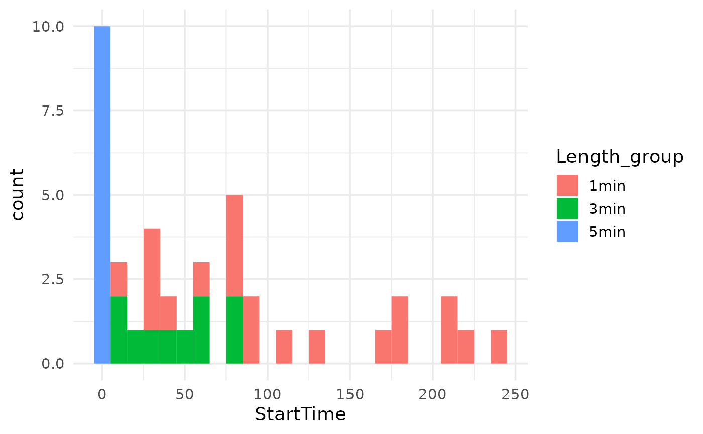

This vignette will walk through the workflow of subsampling recordings. This can be particularily useful if you have many more recordings than you can interpret manually.
Create data
We will generate some data from the sites in
example_sites. Click on the triangle below to see the
details of this method.
Details of simulation
To simulate the file names we generate a series of recordings at each site. Here the schedule is every 30 minutes between 5:30 and 8:00 AM every second day between 1 May and 10 July.
Normally you would want to schedule based around local sunrise if targeting the dawn chorus, but this will work for our purposes.
library(dplyr)
#>
#> Attaching package: 'dplyr'
#> The following objects are masked from 'package:stats':
#>
#> filter, lag
#> The following objects are masked from 'package:base':
#>
#> intersect, setdiff, setequal, union
library(stringr)
library(lubridate)
#>
#> Attaching package: 'lubridate'
#> The following objects are masked from 'package:base':
#>
#> date, intersect, setdiff, union
simple_deploy <-
tidyr::expand_grid(site_id = unique(example_sites$Sites),
doy = seq(121,191, by = 2),
times = seq(-30, 120, by = 30)) |>
tidyr::separate(site_id, into = c("plot", "site"), sep = "_", remove = F) |>
left_join(example_sites, join_by(site_id == Sites)) |>
mutate(
# aru_id = glue::glue("BARLT-000{as.numeric(as.factor(site_id))}"),
date = ymd("2028-01-01")+doy,
date_time = ymd_hm(glue::glue("{date} 06:00"))+minutes(times),
date_time_chr = str_replace(as.character(date_time), "\\s", "T"),
file_name = glue::glue("{plot}/{site_id}/{ARU}_{date_time_chr}.wav") )
simple_deploy
#> # A tibble: 2,160 × 16
#> site_id plot site doy times Date_set_out Date_removed ARU lon lat
#> <chr> <chr> <chr> <dbl> <dbl> <chr> <chr> <chr> <dbl> <dbl>
#> 1 P01_1 P01 1 121 -30 2020-05-01 2020-05-03 BARLT10… -85.0 50.0
#> 2 P01_1 P01 1 121 0 2020-05-01 2020-05-03 BARLT10… -85.0 50.0
#> 3 P01_1 P01 1 121 30 2020-05-01 2020-05-03 BARLT10… -85.0 50.0
#> 4 P01_1 P01 1 121 60 2020-05-01 2020-05-03 BARLT10… -85.0 50.0
#> # ℹ 2,156 more rows
#> # ℹ 6 more variables: Plots <chr>, Subplot <chr>, date <date>,
#> # date_time <dttm>, date_time_chr <chr>, file_name <glue>Our site info will be that used in example_sites.
Clean metadata
To clean the metadata we can use the same code found in the Getting
Started vignette. I have used a pipe to save space here, but you can
see the details in the linked article
(vignette("ARUtools")).
sites <- clean_site_index(site_info,
col_aru_id = "ARU",
col_site_id = "site_id",
col_date_time = c("date_time"),
col_coords = c("lon", "lat") )
metadata <- clean_metadata(project_files = simple_deploy$file_name) |>
add_sites( sites) |>
calc_sun() |>
dplyr::mutate( doy = lubridate::yday(date))
#> Extracting ARU info...
#> Extracting Dates and Times...
#> Joining by column `date_time` using buffers
dplyr::glimpse(metadata)
#> Rows: 2,160
#> Columns: 14
#> $ file_name <chr> "BARLT10962_2028-05-01T05:30:00.wav", "BARLT10962_2028-05-01…
#> $ type <chr> "wav", "wav", "wav", "wav", "wav", "wav", "wav", "wav", "wav…
#> $ path <chr> "P01/P01_1/BARLT10962_2028-05-01T05:30:00.wav", "P01/P01_1/B…
#> $ aru_type <chr> "BarLT", "BarLT", "BarLT", "BarLT", "BarLT", "BarLT", "BarLT…
#> $ aru_id <chr> "BARLT10962", "BARLT10962", "BARLT10962", "BARLT10962", "BAR…
#> $ site_id <chr> "P01_1", "P01_1", "P01_1", "P01_1", "P01_1", "P01_1", "P01_1…
#> $ date_time <dttm> 2028-05-01 05:30:00, 2028-05-01 06:00:00, 2028-05-01 06:30:…
#> $ date <date> 2028-05-01, 2028-05-01, 2028-05-01, 2028-05-01, 2028-05-01,…
#> $ longitude <dbl> -85.03, -85.03, -85.03, -85.03, -85.03, -85.03, -85.03, -85.…
#> $ latitude <dbl> 50.01, 50.01, 50.01, 50.01, 50.01, 50.01, 50.01, 50.01, 50.0…
#> $ tz <chr> "America/Toronto", "America/Toronto", "America/Toronto", "Am…
#> $ t2sr <dbl> -46.80, -16.80, 13.20, 43.20, 73.20, 103.20, -43.35, -13.35,…
#> $ t2ss <dbl> 511.6167, 541.6167, 571.6167, 601.6167, 631.6167, 661.6167, …
#> $ doy <dbl> 122, 122, 122, 122, 122, 122, 124, 124, 124, 124, 124, 124, …Parameters
Generally for random sampling you may not want to have recordings selected with equal weight across time and dates. For example if you are sampling songbirds in the breeding season, most species will be most active for a couple hours from around sunrise. You will also want to limit the dates to ensure you are picking up breeding birds and not migrants.
To deal with this issue we allow the user to specify selection weights based on the time to sunrise (or sunset) as well as the day of year.
Note: This is an active area of development and you can expect the process of assigning variables to be much simpler in the next update.
params <- list(min_range = c(-70, 240),
doy_range = c(120, lubridate::yday(lubridate::ymd("2021-07-20"))),
mean_min = 30, sd_min = 60,
mean_doy = lubridate::yday(lubridate::ymd("2021-06-10")),
sd_doy = 20,off=0,
log_ = TRUE, fun = "norm") To visualize the selection parameters use
gen_dens_sel_simulation. This will show you how the sample
weights will change over time and time to sunrise/sunset.
gen_dens_sel_simulation(parms = params) 
Calculate selection weights
Once you have your parameters set up, you can use them to calculate the sampling weights from the metadata.
full_selection_probs <-
metadata |>
calc_sel_pr(
ARU_ID_col = site_id,
min_col = t2sr,
day_col = doy,
parms = params)Below you can see the selection weights psel_normalized.
The highest selection weights should match the output from
gen_dens_sel_simulation(). Not that as our schedule is set
to start based on time, the time to sunrise that the recordings occur
differ by sites.

Assign sample size
The next step is to assign sample sizes. This can be done on a per site basis or across the board. Here I use a 2% sampling rate, but your own subsampling intensity will depend on project goals. You can also set an oversample to draw extra samples in case some samples are unusable (e.g. due to wind).
sample_size <- count(full_selection_probs, site_id) |>
transmute(site_id,
N = floor(n*.02),
n_os = ceiling(N*.3)
)The figure below can provide a coarse rule of thumb on how many minutes of recordings you might need or number of samples. It of course has many assumptions including knowledge of probability of observing per minute, that this probability will change by date, time of day, conspecific behaviour, weather, etc.

Draw subsample
GRTS
There are a few ways to subsample recordings. ARUtools
has imported the grts()
(Generalized Random Tessellation Stratified algorithm) function from spsurvey package. We
developed a wrapper around the function to simplify it’s usage for our
particular use case.
GRTS allows us to sample using a dispersed samples, while maintaining a stochastic element to sampling. In our case we are selecting samples dispersed across dates and time in the dates.
grts_res <- fun_aru_samp(full_selection_probs,
N = sample_size,
strat_ = "site_id",
seed = 2024,
selprob_id = "psel_normalized",
x = 'doy',y = 't2sr')
#> Warning: Since version 0.4 default selection parameter in gen_dens_sel_simulation is psel_normalize,
#> which ranges from 0 to 1. If you wish to base decisions here off the simulation,
#> you can adjust the `selection_variable` paramter, which is an unquoted variable name of which
#> options are psel, psel_doy, psel_tod, psel_std, psel_scaled, or psel_normalized
#> [1] "10" "Sample"
dplyr::glimpse(grts_res$sites_base)
#> Rows: 40
#> Columns: 29
#> $ siteID <chr> "Sample-01", "Sample-02", "Sample-03", "Sample-04", "S…
#> $ siteuse <chr> "Base", "Base", "Base", "Base", "Base", "Base", "Base"…
#> $ replsite <chr> "None", "None", "None", "None", "None", "None", "None"…
#> $ lon_WGS84 <dbl> 0.001365439, 0.001545102, 0.001203742, 0.001563069, 0.…
#> $ lat_WGS84 <dbl> 4.723823e-04, 5.254387e-04, -2.502089e-04, -2.125268e-…
#> $ stratum <chr> "P01_1", "P01_1", "P01_1", "P01_1", "P02_1", "P02_1", …
#> $ wgt <dbl> 35.29300, 36.72486, 72.07435, 38.37921, 33.54426, 76.4…
#> $ ip <dbl> 0.028334233, 0.027229512, 0.013874562, 0.026055777, 0.…
#> $ caty <chr> "None", "None", "None", "None", "None", "None", "None"…
#> $ aux <dbl> 0.9307375, 0.8944490, 0.4557587, 0.8558936, 0.9678483,…
#> $ file_name <chr> "BARLT10962_2028-05-31T06:30:00.wav", "BARLT10962_2028…
#> $ type <chr> "wav", "wav", "wav", "wav", "wav", "wav", "wav", "wav"…
#> $ path <chr> "P01/P01_1/BARLT10962_2028-05-31T06:30:00.wav", "P01/P…
#> $ aru_type <chr> "BarLT", "BarLT", "BarLT", "BarLT", "SongMeter", "Song…
#> $ aru_id <chr> "BARLT10962", "BARLT10962", "BARLT10962", "BARLT10962"…
#> $ site_id <chr> "P01_1", "P01_1", "P01_1", "P01_1", "P02_1", "P02_1", …
#> $ date_time <dttm> 2028-05-31 06:30:00, 2028-06-20 06:30:00, 2028-05-13 …
#> $ date <date> 2028-05-31, 2028-06-20, 2028-05-13, 2028-06-22, 2028-…
#> $ longitude <dbl> -85.03, -85.03, -85.03, -85.03, -87.45, -87.45, -87.45…
#> $ latitude <dbl> 50.01, 50.01, 50.01, 50.01, 52.68, 52.68, 52.68, 52.68…
#> $ tz <chr> "America/Toronto", "America/Toronto", "America/Toronto…
#> $ t2ss <dbl> 530.1500, 516.0667, 493.4667, 455.6000, 438.7000, 551.…
#> $ psel_tod <dbl> -0.4561300, -0.4598709, -0.4920422, -0.4628636, -0.460…
#> $ psel_doy <dbl> -0.6675488, -0.6758601, -0.8021915, -0.6858336, -0.650…
#> $ psel <dbl> 0.3250817, 0.3211873, 0.2741078, 0.3170496, 0.3290624,…
#> $ psel_scaled <dbl> 0.9775970, 0.9658855, 0.8243066, 0.9534425, 0.9895679,…
#> $ psel_std <dbl> 0.9776457, 0.9659337, 0.8243477, 0.9534901, 0.9895803,…
#> $ psel_normalized <dbl> 0.9307375, 0.8944490, 0.4557587, 0.8558936, 0.9678483,…
#> $ geometry <POINT [m]> POINT (152 52.23333), POINT (172 58.1), POINT (1…slice_sample
If you don’t want to sample using grts() you can just
use dplyr::slice_sample().
withr::with_seed(2024,{
random_sample <-
full_selection_probs |>
dplyr::slice_sample( n = 4,by = site_id,
weight_by = psel_normalized,
replace = F)
} ) If you want to set site specific sample sizes, you can use some dplyr tricks to handle that:
withr::with_seed(2024,{
random_sample_stratified <-
full_selection_probs |>
left_join(sample_size,by = join_by(site_id)) |>
nest_by(site_id, N) |>
rowwise() |>
mutate(sample = list(dplyr::slice_sample(.data =data,
n = .data$N,
weight_by = psel_normalized,
replace = F)) ) |>
dplyr::select(site_id, sample) |>
tidyr::unnest(sample)
} ) Oversamples with random sampling, just involves dropping recordings you’ve selected and drawing some more.
oversample <- filter(full_selection_probs,
!path %in% random_sample$path) |>
dplyr::slice_sample( n = 2,by = site_id,
weight_by = psel_normalized,
replace = F)
Assigning recording lengths
While some surveys may include all full recordings, others may only interpret a portion of some recordings, allowing for more recordings to be at least partially interpreted.
To assign lengths, we can repeat the same process as above sequentially assigning lengths or more simply just assign them all at once.
withr::with_seed(6546,{
random_sample$length <- sample(x = c("5min", "3min", "1min"),
size = nrow(random_sample), replace = T)
} )#> # A tibble: 3 × 11
#> length P02_1 P03_1 P04_1 P05_1 P07_1 P08_1 P09_1 P10_1 P01_1 P06_1
#> <chr> <dbl> <dbl> <dbl> <dbl> <dbl> <dbl> <dbl> <dbl> <dbl> <dbl>
#> 1 1min 1 3 1 1 3 2 1 1 0 0
#> 2 3min 1 1 1 2 0 1 3 2 3 3
#> 3 5min 2 0 2 1 1 1 0 1 1 1This however creates the issue that some sites will have less and some more of each length.
withr::with_seed(569,{
sample5min <- slice_sample(random_sample,
n=1, by = site_id, weight_by = psel_normalized)
sample3min <- slice_sample(random_sample |>
filter(!path %in% sample5min$path),
n=1, by = site_id, weight_by = psel_normalized)
random_sample_with_lengths <- random_sample |>
mutate(Length_group =
case_when(path %in% sample5min$path ~ "5min",
path %in% sample3min$path ~ "3min",
TRUE~"1min"
),
length_clip = as.numeric(str_extract(Length_group, "^\\d"))*60) })Sampling by site and length creates an equal sample by length and site.
#> # A tibble: 3 × 11
#> Length_group P01_1 P02_1 P03_1 P04_1 P05_1 P06_1 P07_1 P08_1 P09_1 P10_1
#> <chr> <dbl> <dbl> <dbl> <dbl> <dbl> <dbl> <dbl> <dbl> <dbl> <dbl>
#> 1 1min 2 2 2 2 2 2 2 2 2 2
#> 2 3min 1 1 1 1 1 1 1 1 1 1
#> 3 5min 1 1 1 1 1 1 1 1 1 1Assign start times
ARUtools includes the function get_wav_length, which
will return the length of a ‘wav’ file in seconds.
random_sample_with_lengths$length_clip <-
map(1:nrow(random_sample_with_lengths),
~get_wav_length(
file = random_sample_with_lengths$path[[.x]],
return_numeric = T))This can be used to safely add a random start time to your recordings if you don’t want to all start at zero.
For this document we will assume all recordings are 5 minutes.
random_sample_with_lengths$length <- 5*60
random_sample_with_lengths <-
random_sample_with_lengths |>
rowwise() |>
mutate(StartTime = case_when(Length_group == "5min"~0,
TRUE~runif(1, 0,
pmax(0,
length - length_clip)))
) |> ungroup()
Format output filename
Finally we can format the filenames for Wildtrax, which processes sites, dates, and times based on file name.
final_selection <- random_sample_with_lengths |>
add_wildtrax()
final_selection |>
head() |>
dplyr::select(path, wildtrax_file_name)
#> # A tibble: 6 × 2
#> path wildtrax_file_name
#> <chr> <glue>
#> 1 P01/P01_1/BARLT10962_2028-07-06T07:00:00.wav P01_1_20280706_070000
#> 2 P01/P01_1/BARLT10962_2028-06-02T07:00:00.wav P01_1_20280602_070000
#> 3 P01/P01_1/BARLT10962_2028-05-15T06:30:00.wav P01_1_20280515_063000
#> 4 P01/P01_1/BARLT10962_2028-07-04T06:30:00.wav P01_1_20280704_063000
#> # ℹ 2 more rowsClip and copy files for upload
The format_clip_wave will rename, clip and copy your
file to a location that can then be used for uploading to Wildtrax
Setting up a subset of folders will allow you to copy files to an organized folder structure which can help with checking for errors prior to uploading.
out_directory <- "/path/to/upload/directory/"
dir.create(out_directory, recursive = T)
ul_tab <- expand_grid(period =c('Dawn'), # Add 'Dusk' if using more than one time period
length = unique(selected_recordings$Length_group))
purrr::map(glue::glue("{out_directory}/{ul_tab$period}/{ul_tab$length}"),
dir.create,recursive = T)If you have a large number of files, you may want to run this separately for files that require clipping and those that do not as it will run much quicker for the files that do not need to be clipped.
You can use the option use_job=T to allow the use of the
job package, which will launch a background job if the
copying will take a long time.
log_output <-
format_clip_wave(
segment_df = final_selection,
in_base_directory = "",out_base_directory = out_directory,
length_clip_col = "length_clip",
sub_dir_out_col = c("Time_period", "Length_group"),
filepath_in_col = "path",
out_filename_col ="wildtrax_file_name",
use_job = F, filewarn = F)That’s it, your output folder should now have your selected files, properly named for Wildtrax and ready to upload.